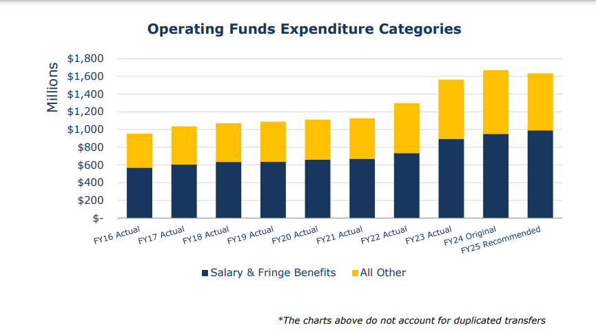
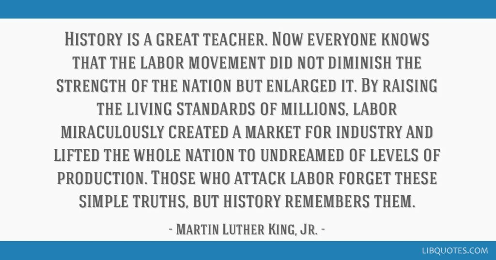
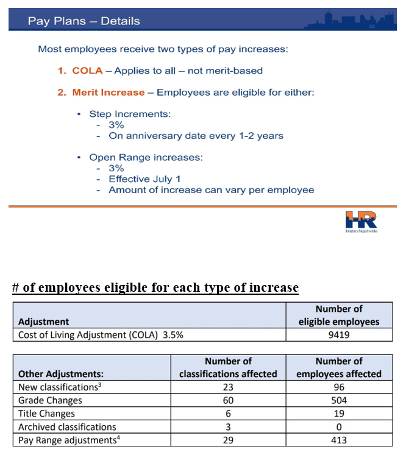
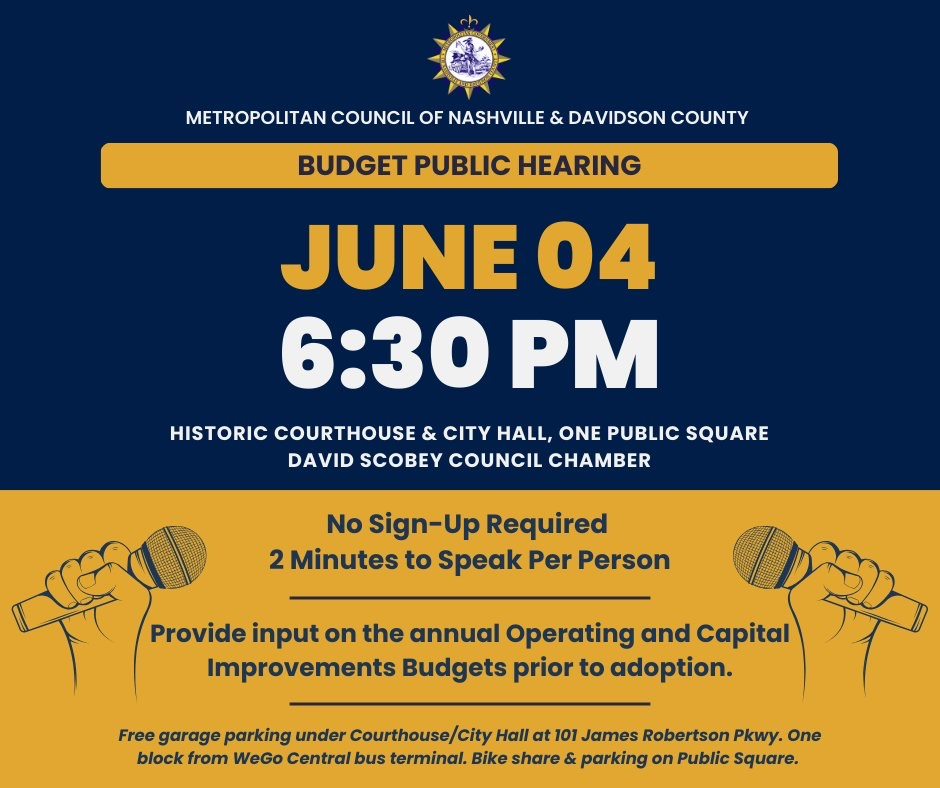
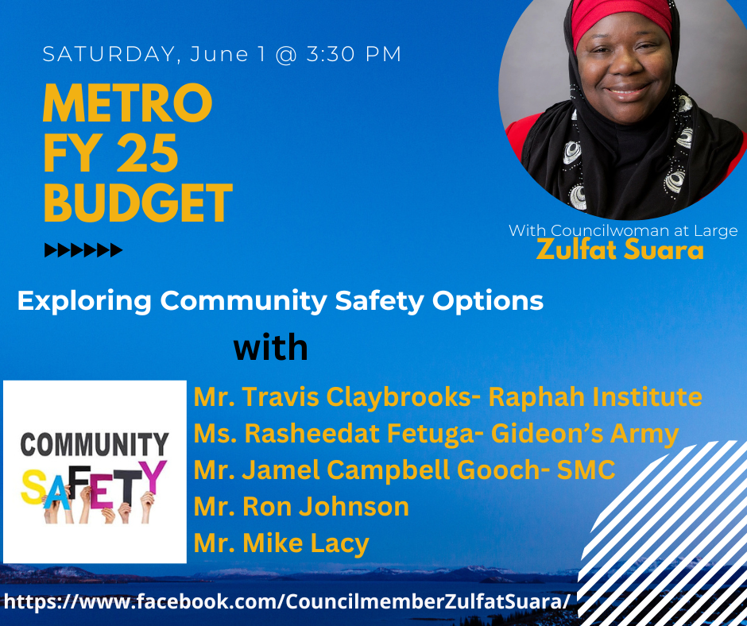

The Budget & Metro Employees – Union Leaders Perspectives
Hello, everyone! Last week our Budget Conversations centered on Metro’s highest funded department – MNPS. This week, we took a deeper dive into these funds, highlighting its largest expense by category – salaries. According to a September 2023 article by the Tennessean shows that Metro Government ranked 45 in Forbes list of top employers nationwide. Therefore, it is not surprising that wages represents Metro’s highest expense category. Historically, salaries and fringes make up about 60% of Metro’s operating budget, so it is important that every budget conversation include how Nashville takes care of its biggest asset – its people.

This week, I was joined by union leaders to discuss how Nashville can best support the people who fuel the future of our city. My conversations with the union leaders include understanding what each union does, some of the union wins for this last fiscal year, and most importantly, what their members need to feel heard and represented this budget season.
My panelist
This week, I got to chat with three amazing union leaders who broke down what they do and how this budget affects their communities.
Dr. Paula Pendergrass – President of the Metro Nashville Education Association (MNEA)
MNEA ensures that teachers and staff within Metro Nashville Public Schools are met with fair working conditions and are thriving. Since our teachers’ working conditions reflect our students’ learning conditions, MNEA ensures that teachers have all the resources they need to be successful.
Tamika White – Political Director of SEIU Local 205
SEIU Local 205 represents the service employees international union and is a statewide organization across Tennessee. In Nashville, SEIU represents both public (Metro employees) and private sector employees including Meharry Medical College and Lincoln Tech.
Ethan Link – LiUNA/Laborers’ International Union of North America
LiUNA represents construction workers across Middle and West Tennessee alongside 600-700 service employees at Vanderbilt University – including dining workers, custodial workers, and maintenance staff. Representing such a diverse workforce, LiUNA work to make sure construction workers are treated with dignity and fight to get better living conditions for employees who are being impacted by the increased housing and transportation costs.
Recent Labor Wins

Before discussing challenges and the FY25 budget, we discussed what the recent wins were for the members of each union.
MNEA
MNEA holds so much collective power in representing the certified educators. One win has been ensuring that teachers have their planning time protected (as allocated by state law) and are not impeded on due to the teacher shortage. This allows for them to not have to take work home and infringe upon their personal time and overall wellbeing. Also, despite having different types of leaves possible, MNEA has been crucial in ensuring that educators are able to actually take that leave – whether it be religious leave or sick leave – and appropriately care for themselves. Additionally, there are times that educators have to work outside of their contracted hours, so MNEA is critical in ensuring they are able to get their daily pay rate for those additional hours to support them. Finally, MNEA able to advocate for early educators during union issues and ensure that they can be retained and invested into the future of Nashville’s youth.
SEIU
As always, any progress towards getting workers better pay and better working conditions is considered a win. SEIU won pay increases across all of the chapters with Methodist Medical Center receiving their largest pay increase in history. They also got a 6% Cost of Living Adjustment (COLA) by Metro in the FY24 budget. This is the biggest COLA increase in the union’s history. Additionally, SEIU gained a lot of traction working on repealing the grocery tax. Though it did not pass at a state level, members will continue to work on it in future legislative sessions. Another win was working with a coalition across the state to defeat Governor Lee’s voucher bill – ensuring that it wasn’t expanded across the state. Finally, SEIU elected its first black female presidents both at the local and national level. April Verrett became first black female national president and Jessica Stewart was elected as the first black female president our local SEIU chapter. Jessica Stewart was also elected to the national executive board.
LiUNA
In the construction world, there are two big wins to highlight. The first is that this year’s MC3 (Music City Construction) class was the largest and most diverse class to graduate. MC3 is a program to introduce Nashvillians from various backgrounds to the trades and helps them connect to local unions and trades across the city. MC3 is also now active in Maplewood High School (who got to graduate their first inaugural class with many considering the trades and two going still into college). Having the city invested in this program shows that they are invested in programs that work. Between screening and classroom time, MC3 is a deeply multifaceted program – where city involvement and funding is seen as such a crucial part of support. This summer, MC3 trains its next class of 47 more people. This class includes 7 women with plans to recruit more women in the future into the trades. Finally, the labor agreement between LiUNA and Fallon Company for the East Bank development is lauded as a new way of doing business in the city.
FY25 Budget and Metro Employees
Mayor O’Connell FY25 budget includes a $47M investment in Metro employees. This includes a 3.5% COLA, 3% Merit raises and a minimum wage of $20/hour for all employees.

Overview of Metro HR FY 25 Pay Plan
In the FY25 HR plan memo sent to Vice Mayor- Angie Henderson, HR Director Shannon Hall shared details about the FY25 pay plan and how many employees are affected. According to the memo, the Civil Service pay plans has 585 job titles and 9 pay schedules covering about 9500 employees. Approximately 6500 of these employees are compensated on step plans, while approximately 3000 employees are compensated on Open Ranges. There are also about 1200 employees, that work for elected officials, boards, commissions, or other authorities are not covered by the pay plans.
The memo also indicated that about 9400 employees covered by these pay plans may be eligible for the 3.5% COLA. Most employees compensated under these plans are also eligible for merit-based increases in the form of step raises or Open Range increases. Step increases and Open Range merit increases typically add another 3% to employee pay. These merit increases are fixed amounts in Step plans, and may vary with performance in Open Range plans.

UNION MEMBERS’ REACTION TO THE FY25 BUDGET/PAY PLAN
Below are union reactions and thoughts about the FY25 Budget/Pay Plan.
COLA is less than the inflation rate and amount proposed by the Civil Service :
The general consensus among members is that the 3.5% COLA is not enough, since it is less than the inflation are (4%) and the 5% increase recommended by the Civil Service Commission. Paying at a less than the inflation rate means employees will be spending more than they make. With rising cost of living, workers can no longer afford to live in the city. Members believe that despite a flat budget and a tight year, Metro needs to at least meet at 4% in order to retain workers who are expected to perform daily and not lose them to surrounding counties who pay them what they deserve. With multi-year frozen steps in the past, employees are starting to see who and where money is invested in and how Nashville values its workers.
MNPS staff wants equal raise, including the $20/hr. minimum wage:
MNPS members expect to be treated equally as other metro employees. Unfortunately the mayor’s proposed $20/hr minimum wage does not include MNPS staff, Members are upset that this is a repeat of last year when Metro employees received 2% more in their COLA adjustment. MNPS members are hoping that whatever adjustment is proposed, will be the same for both MNPS and other metro employees.
Maintaining a respectable culture & climate:
MNEA members also addressed culture and climate within schools. As Dr. Pendergrass said, you either pay educators well and they deal with the culture/climate of their school, or improve the culture and climate with less pay. Often, both cannot happen at the same time. With the shortage of educators, our educators are having to do more than usual, so when they are asking for a certain percentage, this is why. As we think about a flat budget and how that affects staff compensation, culture and climate issues need to be addressed in order to maintain and retain our current educators and staff. Metro needs to be cautious and ensure employees are seen and respected for the work they do in this city.
Funding of Worker’s Board- Build it Right
The Build it Right bill, with an investment of 300,000, allows us to make Metro a key player in the construction market of Nashville. This bill will create a new division of Contract Compliance that would have an Executive Director and 1-2 Inspectors – with the goal of getting fully-staffed to 4 inspectors in the future. This would allow for Metro to ensure worksites are safe, and if not safe, send those findings to the proper authorities or remediate the issues through negotiation. In addition to protecting Metro workers, this is also about protecting Metro’s own self-interest. When workers are put in dangerous situations or are not being compensated properly, Metro sees a downfall in its reputation along with an increased court/litigation costs.
Infrastructure Funding:
Amongst the construction trades, many are pleased with Mayor O’Connell’s commitment to funding infrastructure and commitment to funding a smart growth strategy for the city. We have been building up for a long time now and there is a lot of infrastructure work underground that needs to be addressed. There is a lot of excitement with the East Bank and the private MOU reached that will give contractors who do the right things the credit they deserve (and de-incentivize others from cutting corners). This is an example of how to do construction right, especially as Metro is one of the largest purchasers of construction services within the county. What Metro does has both a direct and indirect effect on the construction market.
3 Year Pay Plan:
Metro used to have three-year pay plans that provided employees security with a locked in COLA – allowing employees to budget better knowing that the money was coming year after year. Then, one year Metro did not fund COLA and broke trust with many employees. Ever since then, Metro has been trying to rebuild that trust. The hope is that Metro is able to reevaluate having a multi-year pay plan because it would relieve this annual tension around the budget.
What’s Next
The FY25 pay plan is now up to Metro Council for a decision. The council can approve or reject the plan as presented. Council can make changes to the plan. If council should choose to amend the plan, it must do so by adjusting up or down all grades/rates by uniform percentage. It cannot single out particular jobs or grades within that pay plan for differential treatment. As council is poised to make its decision, it is important for councilmembers to make tough decisions with people in mind – care for the people who maintain and keep this city running.
If you missed my Budget Conversation with union leaders Tamika White, Paula Pendergrass & Ethan Link, you can watch the entire episode at the link below.
FY25 BUDGET HEARING
The FY25 public hearing will be held on June 4, 2024 at 6:30pm. This is your opportunity to make your voice heard with regards to the budget before its adoption. No sign up necessary. See the flyer below for details.

NEXT BUDGET CONVERSATION
This year’s budget conversation will be every Saturday at 3:30 pm on Facebook until the budget is passed by Metro. Next budget conversations is about safety. Chief Drake presented MNPD’s Fy25 plan to council on May 15. Join us as we explore various community safety programs. When it comes to safety it is not a “yes, but…” answer. it’s a “yes AND…”. Join us today at 3:30 on Facebook live at https://www.facebook.com/CouncilmemberZulfatSuara/ with your questions & comments.


Please continue to stay engaged and share your thoughts and ideas about the budget and other important issues facing our city. I value your input and believe that open dialogue and collaborative decision-making are key to effective governance. Together, we can ensure a bright and sustainable future for our great city.
Stay tuned for future budget conversations and feel free to reach out if you have any further questions.
Thank you for joining us in this conversation.